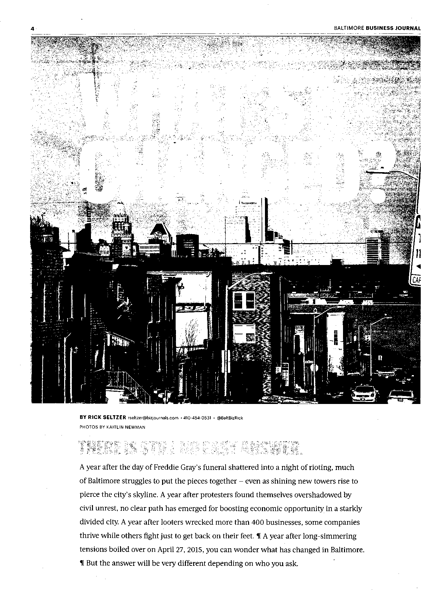
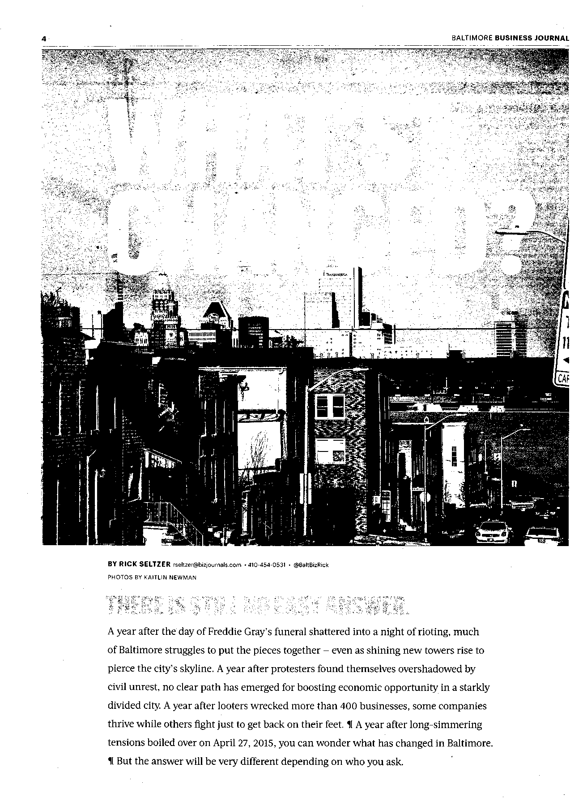

In Bo Bergstrom’s book, “The Essentials of Visual Communication,” he mentions that one particular element in a design should draw the reader’s attention, such as a very large image or heading. Thus, the size of the dominant image is an important factor to consider because it helps to establish a clear hierarchy and point of entry for the audience.
Regarding how long the reader will stick with an article, Homqvist discovered that the most important design factors are the large size, then a large picture or infographic, then drop quotes or a factbox and then color.
Different aspects of design
The main variables explored in this research fall under five main categories, white space, headline, dominant media, color and number of images.
White space
White space is the empty space that exists around different elements of a page layout, which includes columns, lines of type, photos, graphics and more. White space is also sometimes referred to as negative space when the actual color of the space isn’t white, but has no text or subject matter within it. Tsai also states that white space helps to separate elements, which gives them greater prominence from the background (Tsai et. al).
And images and headlines will also garner greater attention if there is ample white space surrounding it (Bergstrom, 2008). Therefore, it follows that white space would be a common tool on award-winning pages because the designer would want to bring attention to the article or imagery that goes along with it.
Headlines
Headlines today are typically aligned left, are wider rather than narrower and sometimes include decks (Harrower, 2002). In order to make the hierarchy of a page clear, it is also important to make sure that the size of the headline is significant enough to make it stand out from the rest of the page (Bergstrom, 2008).
According to Bergstrom, the size of the headline doesn’t also need to be excessively large if it is surrounded by white space because the additional space would give it a greater impact.
Dominant Media
Using photography is common in newspapers, and as mentioned earlier, is often a way for readers to enter the page. But the kind of photo or dominant imagery also has an effect on how quickly the audience looks at a page. According to Leckner, who divided pictures into four different subjects (information graphics, maps, drawings and photos), all of the picture elements except for information graphics were looked at earlier.
Photos will attract the reader regardless of the subject of the article it’s associated with, and if the photo is natural, it will be looked at longer than a staged photo. Photos with faces in them are also looked at earlier than photos with just objects (Leckner).
Staged photos and photo illustrations are defined in that study as, “photos that have been altered with gradients and blurs, images that have been created by compositing two or more images and images of people who have been removed from their backgrounds.” These have also become much more common in newspaper front pages, and they are used in 86.3 percent of newspapers (Leckner).
But infographics were the only pictorial element that did not get looked at earlier, which is attributed to readers seeing them as requiring more effort, so more easily accessible content is looked at sooner (Holmberg, 2004).
Illustrations are often used for abstract concepts. Drawings that are based more off of the tone of the story instead of a direct representation of the people in the article are often common in feature pages (Harrower, 2002).
 
